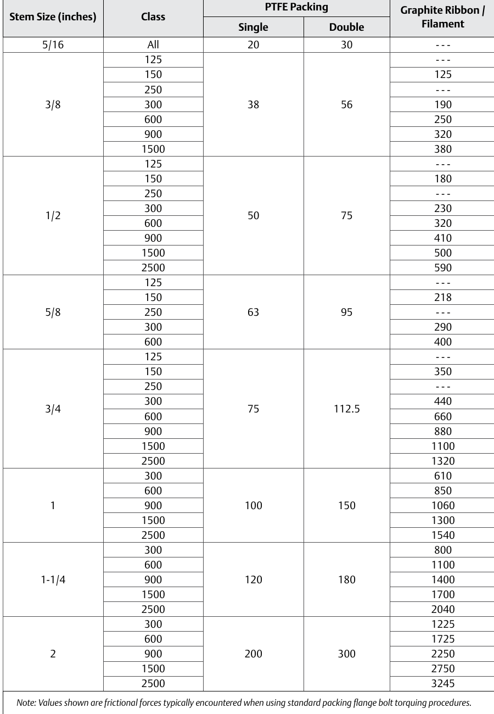

How Packing Friction Is Measured

- 1Friction is measured empirically, by stem size and pressure class, and tabulated per packing type — not a fixed design constant the way seat load is
- 2The spread is real: a 5/16 in. stem at Class 125 runs 20 lbf with single PTFE; a 3/4 in. stem at Class 600 runs 320 lbf with graphite — roughly an order of magnitude apart
- 3Not 100% repeatable: live-loaded designs, graphite especially, carry real shot-to-shot variation — an actuator force-margin calculation treats packing friction as a variable input, not a trusted lookup number
After Control Valve Handbook, 6th ed., Fig. 5.5 (printed p. 125) — table-formatted figure used directly. Component Index: cvh-cmp-packing-friction-values-table.